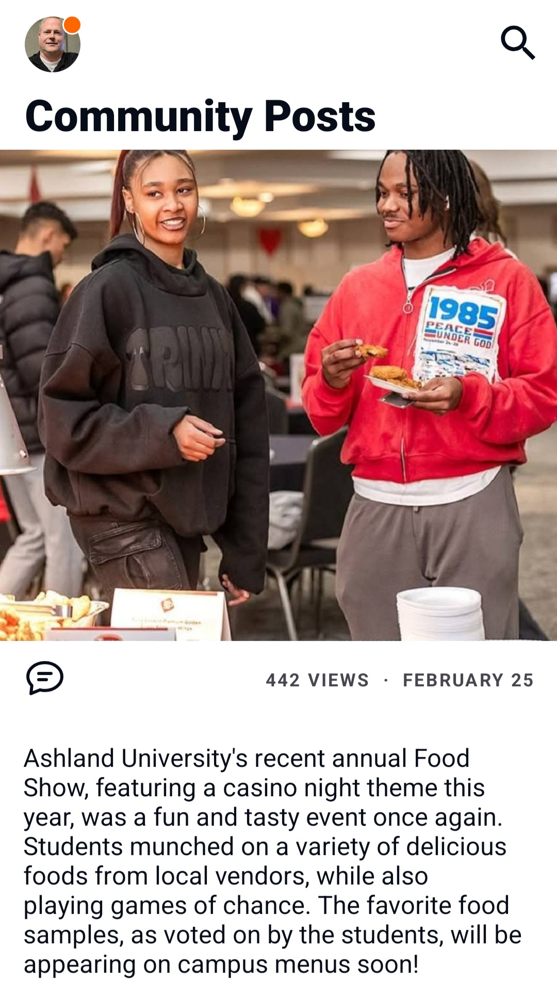
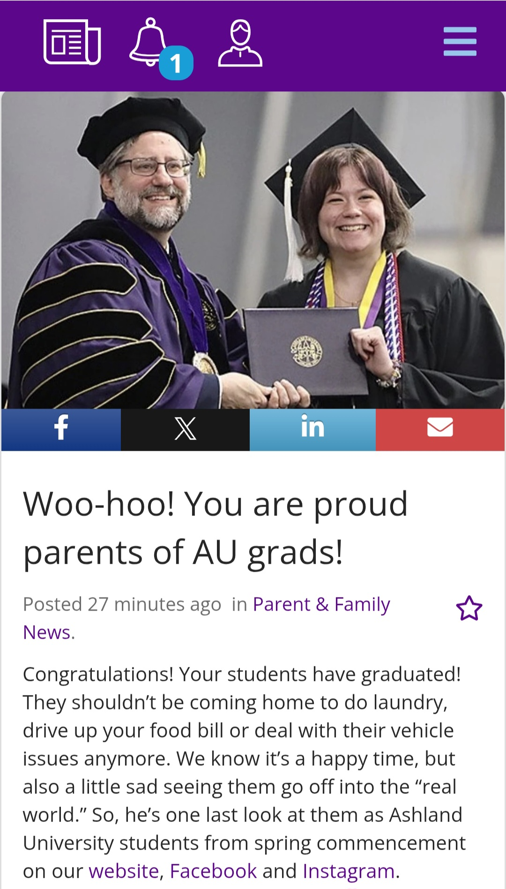
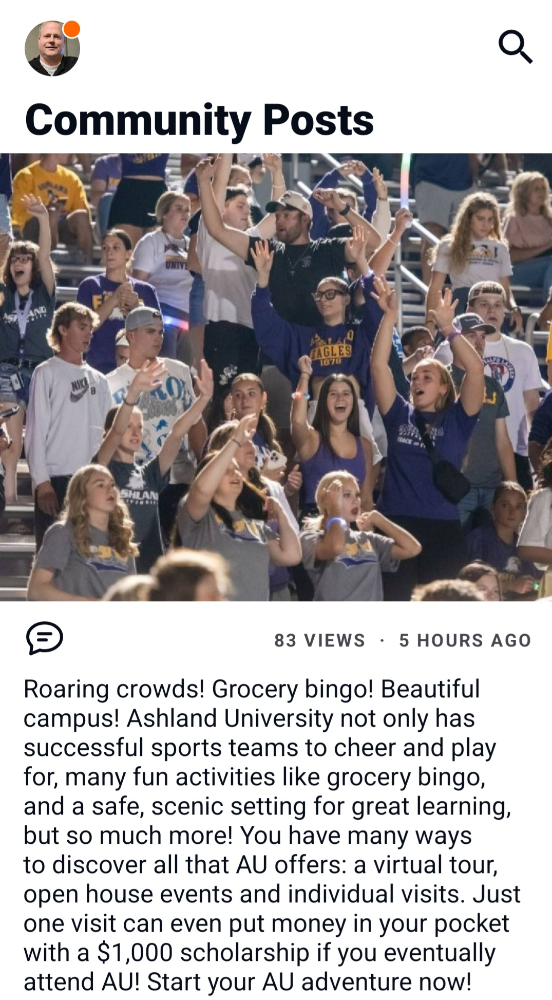
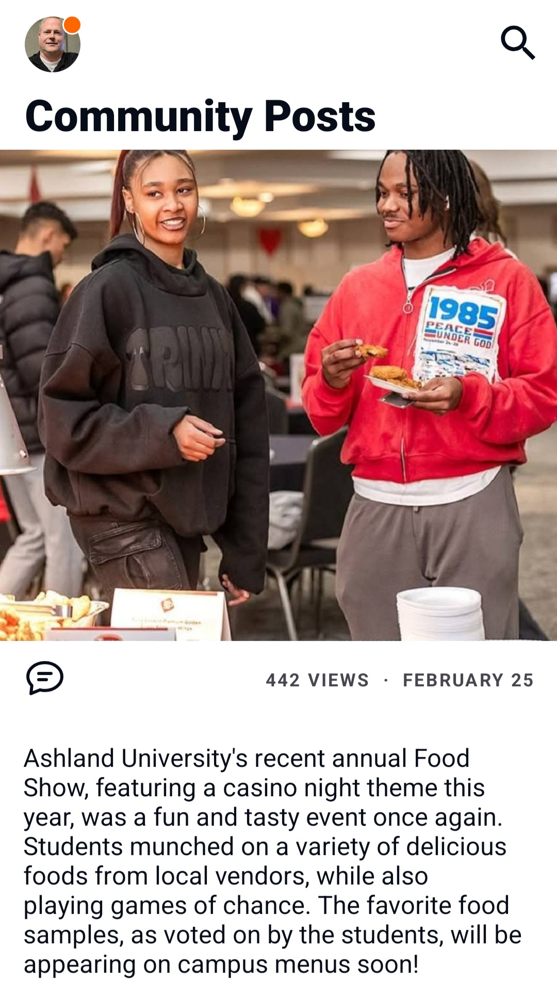
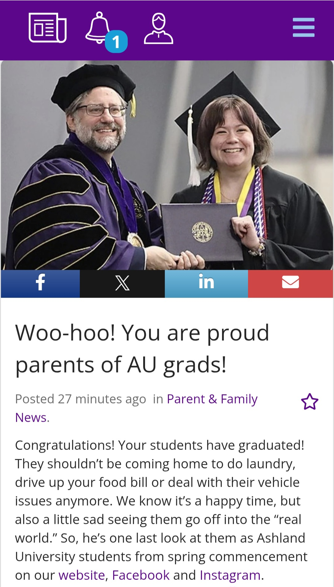
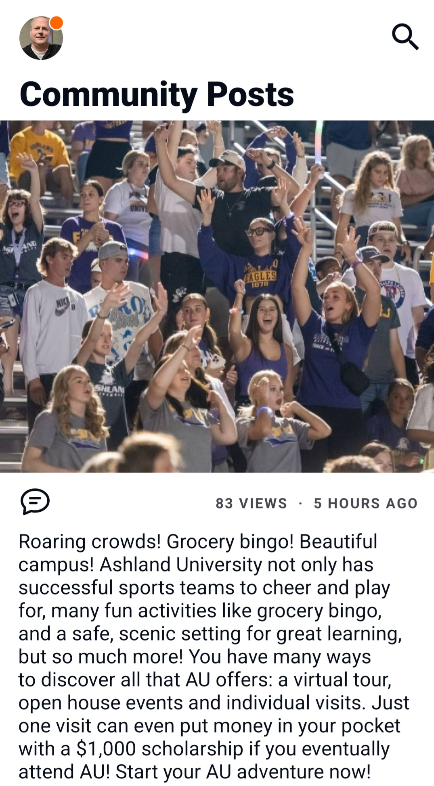

Awards & Recognition

1996
Minnesota Newspaper Association
Second Place Best Sports Feature Story

2000
Associated Press Society of Ohio
Second Place Best Sports Column

2003
Associated Press Society of Ohio
First Place Best Business Writer

2004
Associated Press Society of Ohio
Third Place Best Editorial Writer

2005
Associated Press Society of Ohio
Third Place Best Editorial Writer

2011
Ashland County Farm Bureau
Friend of Farm Bureau

2012
Ohio Associated Press Media Editors
First Place Best Page One Layout


 




